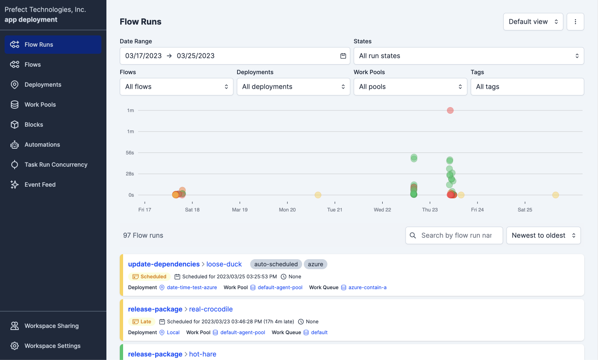
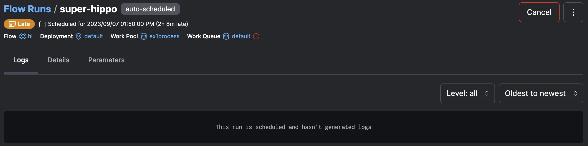

Flows¶
Flows are the most basic Prefect object. Flows are the only Prefect abstraction that can be interacted with, displayed, and run without needing to reference any other aspect of the Prefect engine. A flow is a container for workflow logic and allows users to interact with and reason about the state of their workflows. It is represented in Python as a single function.
Flows overview¶
Flows are like functions. They can take inputs, perform work, and return an output. In fact, you can turn any function into a Prefect flow by adding the @flow decorator. When a function becomes a flow, its behavior changes, giving it the following advantages:
- State transitions are reported to the API, allowing observation of flow execution.
- Input arguments types can be validated.
- Retries can be performed on failure.
- Timeouts can be enforced to prevent unintentional, long-running workflows.
Flows also take advantage of automatic Prefect logging to capture details about flow runs such as run time, task tags, and final state.
All workflows are defined within the context of a flow. Flows can include calls to tasks as well as to other flows, which we call "subflows" in this context. Flows may be defined within modules and imported for use as subflows in your flow definitions.
Flows are required for deployments — every deployment points to a specific flow as the entrypoint for a flow run.
Tasks must be called from flows
All tasks must be called from within a flow. Tasks may not be called from other tasks.
Flow runs¶
A flow run represents a single execution of the flow.
You can create a flow run by calling the flow. For example, by running a Python script or importing the flow into an interactive session.
You can also create a flow run by:
- Creating a deployment on Prefect Cloud or a locally run Prefect server.
- Creating a flow run for the deployment via a schedule, the Prefect UI, or the Prefect API.
However you run the flow, the Prefect API monitors the flow run, capturing flow run state for observability.
When you run a flow that contains tasks or additional flows, Prefect will track the relationship of each child run to the parent flow run.

Writing flows¶
For most use cases, we recommend using the @flow decorator to designate a flow:
from prefect import flow
@flow
def my_flow():
return
Flows are uniquely identified by name. You can provide a name parameter value for the flow. If you don't provide a name, Prefect uses the flow function name.
@flow(name="My Flow")
def my_flow():
return
Flows can call tasks to do specific work:
from prefect import flow, task
@task
def print_hello(name):
print(f"Hello {name}!")
@flow(name="Hello Flow")
def hello_world(name="world"):
print_hello(name)
Flows and tasks
There's nothing stopping you from putting all of your code in a single flow function — Prefect will happily run it!
However, organizing your workflow code into smaller flow and task units lets you take advantage of Prefect features like retries, more granular visibility into runtime state, the ability to determine final state regardless of individual task state, and more.
In addition, if you put all of your workflow logic in a single flow function and any line of code fails, the entire flow will fail and must be retried from the beginning. This can be avoided by breaking up the code into multiple tasks.
Each Prefect workflow must contain one primary, entrypoint @flow function. From that flow function, you may call any number of other tasks, subflows, and even regular Python functions. You can pass parameters to your entrypoint flow function that will be used elsewhere in the workflow, and the final state of that entrypoint flow function determines the final state of your workflow.
Prefect encourages "small tasks" — each one should represent a single logical step of your workflow. This allows Prefect to better contain task failures.
Flow settings¶
Flows allow a great deal of configuration by passing arguments to the decorator. Flows accept the following optional settings.
| Argument | Description |
|---|---|
description |
An optional string description for the flow. If not provided, the description will be pulled from the docstring for the decorated function. |
name |
An optional name for the flow. If not provided, the name will be inferred from the function. |
retries |
An optional number of times to retry on flow run failure. |
retry_delay_seconds |
An optional number of seconds to wait before retrying the flow after failure. This is only applicable if retries is nonzero. |
flow_run_name |
An optional name to distinguish runs of this flow; this name can be provided as a string template with the flow's parameters as variables; this name can also be provided as a function that returns a string. |
task_runner |
An optional task runner to use for task execution within the flow when you .submit() tasks. If not provided and you .submit() tasks, the ConcurrentTaskRunner will be used. |
timeout_seconds |
An optional number of seconds indicating a maximum runtime for the flow. If the flow exceeds this runtime, it will be marked as failed. Flow execution may continue until the next task is called. |
validate_parameters |
Boolean indicating whether parameters passed to flows are validated by Pydantic. Default is True. |
version |
An optional version string for the flow. If not provided, we will attempt to create a version string as a hash of the file containing the wrapped function. If the file cannot be located, the version will be null. |
For example, you can provide a name value for the flow. Here we've also used the optional description argument and specified a non-default task runner.
from prefect import flow
from prefect.task_runners import SequentialTaskRunner
@flow(name="My Flow",
description="My flow using SequentialTaskRunner",
task_runner=SequentialTaskRunner())
def my_flow():
return
You can also provide the description as the docstring on the flow function.
@flow(name="My Flow",
task_runner=SequentialTaskRunner())
def my_flow():
"""My flow using SequentialTaskRunner"""
return
You can distinguish runs of this flow by providing a flow_run_name; this setting accepts a string that can optionally contain templated references to the parameters of your flow. The name will be formatted using Python's standard string formatting syntax as can be seen here:
import datetime
from prefect import flow
@flow(flow_run_name="{name}-on-{date:%A}")
def my_flow(name: str, date: datetime.datetime):
pass
# creates a flow run called 'marvin-on-Thursday'
my_flow(name="marvin", date=datetime.datetime.utcnow())
Additionally this setting also accepts a function that returns a string for the flow run name:
import datetime
from prefect import flow
def generate_flow_run_name():
date = datetime.datetime.utcnow()
return f"{date:%A}-is-a-nice-day"
@flow(flow_run_name=generate_flow_run_name)
def my_flow(name: str):
pass
# creates a flow run called 'Thursday-is-a-nice-day'
my_flow(name="marvin")
If you need access to information about the flow, use the prefect.runtime module. For example:
from prefect import flow
from prefect.runtime import flow_run
def generate_flow_run_name():
flow_name = flow_run.flow_name
parameters = flow_run.parameters
name = parameters["name"]
limit = parameters["limit"]
return f"{flow_name}-with-{name}-and-{limit}"
@flow(flow_run_name=generate_flow_run_name)
def my_flow(name: str, limit: int = 100):
pass
# creates a flow run called 'my-flow-with-marvin-and-100'
my_flow(name="marvin")
Note that validate_parameters will check that input values conform to the annotated types on the function. Where possible, values will be coerced into the correct type. For example, if a parameter is defined as x: int and "5" is passed, it will be resolved to 5. If set to False, no validation will be performed on flow parameters.
Separating logic into tasks¶
The simplest workflow is just a @flow function that does all the work of the workflow.
from prefect import flow
@flow(name="Hello Flow")
def hello_world(name="world"):
print(f"Hello {name}!")
hello_world("Marvin")
When you run this flow, you'll see the following output:
$ python hello.py
15:11:23.594 | INFO | prefect.engine - Created flow run 'benevolent-donkey' for flow 'hello-world'
15:11:23.594 | INFO | Flow run 'benevolent-donkey' - Using task runner 'ConcurrentTaskRunner'
Hello Marvin!
15:11:24.447 | INFO | Flow run 'benevolent-donkey' - Finished in state Completed()
A better practice is to create @task functions that do the specific work of your flow, and use your @flow function as the conductor that orchestrates the flow of your application:
from prefect import flow, task
@task(name="Print Hello")
def print_hello(name):
msg = f"Hello {name}!"
print(msg)
return msg
@flow(name="Hello Flow")
def hello_world(name="world"):
message = print_hello(name)
hello_world("Marvin")
When you run this flow, you'll see the following output, which illustrates how the work is encapsulated in a task run.
$ python hello.py
15:15:58.673 | INFO | prefect.engine - Created flow run 'loose-wolverine' for flow 'Hello Flow'
15:15:58.674 | INFO | Flow run 'loose-wolverine' - Using task runner 'ConcurrentTaskRunner'
15:15:58.973 | INFO | Flow run 'loose-wolverine' - Created task run 'Print Hello-84f0fe0e-0' for task 'Print Hello'
Hello Marvin!
15:15:59.037 | INFO | Task run 'Print Hello-84f0fe0e-0' - Finished in state Completed()
15:15:59.568 | INFO | Flow run 'loose-wolverine' - Finished in state Completed('All states completed.')
Composing flows¶
A subflow run is created when a flow function is called inside the execution of another flow. The primary flow is the "parent" flow. The flow created within the parent is the "child" flow or "subflow."
Subflow runs behave like normal flow runs. There is a full representation of the flow run in the backend as if it had been called separately. When a subflow starts, it will create a new task runner for tasks within the subflow. When the subflow completes, the task runner is shut down.
Subflows will block execution of the parent flow until completion. However, asynchronous subflows can be run in parallel by using AnyIO task groups or asyncio.gather.
Subflows differ from normal flows in that they will resolve any passed task futures into data. This allows data to be passed from the parent flow to the child easily.
The relationship between a child and parent flow is tracked by creating a special task run in the parent flow. This task run will mirror the state of the child flow run.
A task that represents a subflow will be annotated as such in its state_details via the presence of a child_flow_run_id field. A subflow can be identified via the presence of a parent_task_run_id on state_details.
You can define multiple flows within the same file. Whether running locally or via a deployment, you must indicate which flow is the entrypoint for a flow run.
from prefect import flow, task
@task(name="Print Hello")
def print_hello(name):
msg = f"Hello {name}!"
print(msg)
return msg
@flow(name="Subflow")
def my_subflow(msg):
print(f"Subflow says: {msg}")
@flow(name="Hello Flow")
def hello_world(name="world"):
message = print_hello(name)
my_subflow(message)
hello_world("Marvin")
You can also define flows or tasks in separate modules and import them for usage. For example, here's a simple subflow module:
from prefect import flow, task
@flow(name="Subflow")
def my_subflow(msg):
print(f"Subflow says: {msg}")
Here's a parent flow that imports and uses my_subflow() as a subflow:
from prefect import flow, task
from subflow import my_subflow
@task(name="Print Hello")
def print_hello(name):
msg = f"Hello {name}!"
print(msg)
return msg
@flow(name="Hello Flow")
def hello_world(name="world"):
message = print_hello(name)
my_subflow(message)
hello_world("Marvin")
Running the hello_world() flow (in this example from the file hello.py) creates a flow run like this:
$ python hello.py
15:19:21.651 | INFO | prefect.engine - Created flow run 'daft-cougar' for flow 'Hello Flow'
15:19:21.651 | INFO | Flow run 'daft-cougar' - Using task runner 'ConcurrentTaskRunner'
15:19:21.945 | INFO | Flow run 'daft-cougar' - Created task run 'Print Hello-84f0fe0e-0' for task 'Print Hello'
Hello Marvin!
15:19:22.055 | INFO | Task run 'Print Hello-84f0fe0e-0' - Finished in state Completed()
15:19:22.107 | INFO | Flow run 'daft-cougar' - Created subflow run 'ninja-duck' for flow 'Subflow'
Subflow says: Hello Marvin!
15:19:22.794 | INFO | Flow run 'ninja-duck' - Finished in state Completed()
15:19:23.215 | INFO | Flow run 'daft-cougar' - Finished in state Completed('All states completed.')
Subflows or tasks?
In Prefect you can call tasks or subflows to do work within your workflow, including passing results from other tasks to your subflow. So a common question we hear is:
"When should I use a subflow instead of a task?"
We recommend writing tasks that do a discrete, specific piece of work in your workflow: calling an API, performing a database operation, analyzing or transforming a data point. Prefect tasks are well suited to parallel or distributed execution using distributed computation frameworks such as Dask or Ray. For troubleshooting, the more granular you create your tasks, the easier it is to find and fix issues should a task fail.
Subflows enable you to group related tasks within your workflow. Here are some scenarios where you might choose to use a subflow rather than calling tasks individually:
- Observability: Subflows, like any other flow run, have first-class observability within the Prefect UI and Prefect Cloud. You'll see subflow status in the Flow Runs dashboard rather than having to dig down into the tasks within a specific flow run. See Final state determination for some examples of leveraging task state within flows.
- Conditional flows: If you have a group of tasks that run only under certain conditions, you can group them within a subflow and conditionally run the subflow rather than each task individually.
- Parameters: Flows have first-class support for parameterization, making it easy to run the same group of tasks in different use cases by simply passing different parameters to the subflow in which they run.
- Task runners: Subflows enable you to specify the task runner used for tasks within the flow. For example, if you want to optimize parallel execution of certain tasks with Dask, you can group them in a subflow that uses the Dask task runner. You can use a different task runner for each subflow.
Parameters¶
Flows can be called with both positional and keyword arguments. These arguments are resolved at runtime into a dictionary of parameters mapping name to value. These parameters are stored by the Prefect orchestration engine on the flow run object.
Prefect API requires keyword arguments
When creating flow runs from the Prefect API, parameter names must be specified when overriding defaults — they cannot be positional.
Type hints provide an easy way to enforce typing on your flow parameters via pydantic. This means any pydantic model used as a type hint within a flow will be coerced automatically into the relevant object type:
from prefect import flow
from pydantic import BaseModel
class Model(BaseModel):
a: int
b: float
c: str
@flow
def model_validator(model: Model):
print(model)
Note that parameter values can be provided to a flow via API using a deployment. Flow run parameters sent to the API on flow calls are coerced to a serializable form. Type hints on your flow functions provide you a way of automatically coercing JSON provided values to their appropriate Python representation.
For example, to automatically convert something to a datetime:
from prefect import flow
from datetime import datetime
@flow
def what_day_is_it(date: datetime = None):
if date is None:
date = datetime.utcnow()
print(f"It was {date.strftime('%A')} on {date.isoformat()}")
what_day_is_it("2021-01-01T02:00:19.180906")
# It was Friday on 2021-01-01T02:00:19.180906
Parameters are validated before a flow is run. If a flow call receives invalid parameters, a flow run is created in a Failed state. If a flow run for a deployment receives invalid parameters, it will move from a Pending state to a Failed without entering a Running state.
Final state determination¶
Prerequisite
Read the documentation about states before proceeding with this section.
The final state of the flow is determined by its return value. The following rules apply:
- If an exception is raised directly in the flow function, the flow run is marked as failed.
- If the flow does not return a value (or returns
None), its state is determined by the states of all of the tasks and subflows within it. - If any task run or subflow run failed, then the final flow run state is marked as
FAILED. - If any task run was cancelled, then the final flow run state is marked as
CANCELLED. - If a flow returns a manually created state, it is used as the state of the final flow run. This allows for manual determination of final state.
- If the flow run returns any other object, then it is marked as completed.
The following examples illustrate each of these cases:
Raise an exception¶
If an exception is raised within the flow function, the flow is immediately marked as failed.
from prefect import flow
@flow
def always_fails_flow():
raise ValueError("This flow immediately fails")
always_fails_flow()
Running this flow produces the following result:
22:22:36.864 | INFO | prefect.engine - Created flow run 'acrid-tuatara' for flow 'always-fails-flow'
22:22:36.864 | INFO | Flow run 'acrid-tuatara' - Starting 'ConcurrentTaskRunner'; submitted tasks will be run concurrently...
22:22:37.060 | ERROR | Flow run 'acrid-tuatara' - Encountered exception during execution:
Traceback (most recent call last):...
ValueError: This flow immediately fails
Return None¶
A flow with no return statement is determined by the state of all of its task runs.
from prefect import flow, task
@task
def always_fails_task():
raise ValueError("I fail successfully")
@task
def always_succeeds_task():
print("I'm fail safe!")
return "success"
@flow
def always_fails_flow():
always_fails_task.submit().result(raise_on_failure=False)
always_succeeds_task()
if __name__ == "__main__":
always_fails_flow()
Running this flow produces the following result:
18:32:05.345 | INFO | prefect.engine - Created flow run 'auburn-lionfish' for flow 'always-fails-flow'
18:32:05.346 | INFO | Flow run 'auburn-lionfish' - Starting 'ConcurrentTaskRunner'; submitted tasks will be run concurrently...
18:32:05.582 | INFO | Flow run 'auburn-lionfish' - Created task run 'always_fails_task-96e4be14-0' for task 'always_fails_task'
18:32:05.582 | INFO | Flow run 'auburn-lionfish' - Submitted task run 'always_fails_task-96e4be14-0' for execution.
18:32:05.610 | ERROR | Task run 'always_fails_task-96e4be14-0' - Encountered exception during execution:
Traceback (most recent call last):
...
ValueError: I fail successfully
18:32:05.638 | ERROR | Task run 'always_fails_task-96e4be14-0' - Finished in state Failed('Task run encountered an exception.')
18:32:05.658 | INFO | Flow run 'auburn-lionfish' - Created task run 'always_succeeds_task-9c27db32-0' for task 'always_succeeds_task'
18:32:05.659 | INFO | Flow run 'auburn-lionfish' - Executing 'always_succeeds_task-9c27db32-0' immediately...
I'm fail safe!
18:32:05.703 | INFO | Task run 'always_succeeds_task-9c27db32-0' - Finished in state Completed()
18:32:05.730 | ERROR | Flow run 'auburn-lionfish' - Finished in state Failed('1/2 states failed.')
Traceback (most recent call last):
...
ValueError: I fail successfully
Return a future¶
If a flow returns one or more futures, the final state is determined based on the underlying states.
from prefect import flow, task
@task
def always_fails_task():
raise ValueError("I fail successfully")
@task
def always_succeeds_task():
print("I'm fail safe!")
return "success"
@flow
def always_succeeds_flow():
x = always_fails_task.submit().result(raise_on_failure=False)
y = always_succeeds_task.submit(wait_for=[x])
return y
if __name__ == "__main__":
always_succeeds_flow()
Running this flow produces the following result — it succeeds because it returns the future of the task that succeeds:
18:35:24.965 | INFO | prefect.engine - Created flow run 'whispering-guan' for flow 'always-succeeds-flow'
18:35:24.965 | INFO | Flow run 'whispering-guan' - Starting 'ConcurrentTaskRunner'; submitted tasks will be run concurrently...
18:35:25.204 | INFO | Flow run 'whispering-guan' - Created task run 'always_fails_task-96e4be14-0' for task 'always_fails_task'
18:35:25.205 | INFO | Flow run 'whispering-guan' - Submitted task run 'always_fails_task-96e4be14-0' for execution.
18:35:25.232 | ERROR | Task run 'always_fails_task-96e4be14-0' - Encountered exception during execution:
Traceback (most recent call last):
...
ValueError: I fail successfully
18:35:25.265 | ERROR | Task run 'always_fails_task-96e4be14-0' - Finished in state Failed('Task run encountered an exception.')
18:35:25.289 | INFO | Flow run 'whispering-guan' - Created task run 'always_succeeds_task-9c27db32-0' for task 'always_succeeds_task'
18:35:25.289 | INFO | Flow run 'whispering-guan' - Submitted task run 'always_succeeds_task-9c27db32-0' for execution.
I'm fail safe!
18:35:25.335 | INFO | Task run 'always_succeeds_task-9c27db32-0' - Finished in state Completed()
18:35:25.362 | INFO | Flow run 'whispering-guan' - Finished in state Completed('All states completed.')
Return multiple states or futures¶
If a flow returns a mix of futures and states, the final state is determined by resolving all futures to states, then determining if any of the states are not COMPLETED.
from prefect import task, flow
@task
def always_fails_task():
raise ValueError("I am bad task")
@task
def always_succeeds_task():
return "foo"
@flow
def always_succeeds_flow():
return "bar"
@flow
def always_fails_flow():
x = always_fails_task()
y = always_succeeds_task()
z = always_succeeds_flow()
return x, y, z
Running this flow produces the following result. It fails because one of the three returned futures failed. Note that the final state is Failed, but the states of each of the returned futures is included in the flow state:
20:57:51.547 | INFO | prefect.engine - Created flow run 'impartial-gorilla' for flow 'always-fails-flow'
20:57:51.548 | INFO | Flow run 'impartial-gorilla' - Using task runner 'ConcurrentTaskRunner'
20:57:51.645 | INFO | Flow run 'impartial-gorilla' - Created task run 'always_fails_task-58ea43a6-0' for task 'always_fails_task'
20:57:51.686 | INFO | Flow run 'impartial-gorilla' - Created task run 'always_succeeds_task-c9014725-0' for task 'always_succeeds_task'
20:57:51.727 | ERROR | Task run 'always_fails_task-58ea43a6-0' - Encountered exception during execution:
Traceback (most recent call last):...
ValueError: I am bad task
20:57:51.787 | INFO | Task run 'always_succeeds_task-c9014725-0' - Finished in state Completed()
20:57:51.808 | INFO | Flow run 'impartial-gorilla' - Created subflow run 'unbiased-firefly' for flow 'always-succeeds-flow'
20:57:51.884 | ERROR | Task run 'always_fails_task-58ea43a6-0' - Finished in state Failed('Task run encountered an exception.')
20:57:52.438 | INFO | Flow run 'unbiased-firefly' - Finished in state Completed()
20:57:52.811 | ERROR | Flow run 'impartial-gorilla' - Finished in state Failed('1/3 states failed.')
Failed(message='1/3 states failed.', type=FAILED, result=(Failed(message='Task run encountered an exception.', type=FAILED, result=ValueError('I am bad task'), task_run_id=5fd4c697-7c4c-440d-8ebc-dd9c5bbf2245), Completed(message=None, type=COMPLETED, result='foo', task_run_id=df9b6256-f8ac-457c-ba69-0638ac9b9367), Completed(message=None, type=COMPLETED, result='bar', task_run_id=cfdbf4f1-dccd-4816-8d0f-128750017d0c)), flow_run_id=6d2ec094-001a-4cb0-a24e-d2051db6318d)
Returning multiple states
When returning multiple states, they must be contained in a set, list, or tuple. If other collection types are used, the result of the contained states will not be checked.
Return a manual state¶
If a flow returns a manually created state, the final state is determined based on the return value.
from prefect import task, flow
from prefect.server.schemas.states import Completed, Failed
@task
def always_fails_task():
raise ValueError("I fail successfully")
@task
def always_succeeds_task():
print("I'm fail safe!")
return "success"
@flow
def always_succeeds_flow():
x = always_fails_task.submit()
y = always_succeeds_task.submit()
if y.result() == "success":
return Completed(message="I am happy with this result")
else:
return Failed(message="How did this happen!?")
if __name__ == "__main__":
always_succeeds_flow()
Running this flow produces the following result.
18:37:42.844 | INFO | prefect.engine - Created flow run 'lavender-elk' for flow 'always-succeeds-flow'
18:37:42.845 | INFO | Flow run 'lavender-elk' - Starting 'ConcurrentTaskRunner'; submitted tasks will be run concurrently...
18:37:43.125 | INFO | Flow run 'lavender-elk' - Created task run 'always_fails_task-96e4be14-0' for task 'always_fails_task'
18:37:43.126 | INFO | Flow run 'lavender-elk' - Submitted task run 'always_fails_task-96e4be14-0' for execution.
18:37:43.162 | INFO | Flow run 'lavender-elk' - Created task run 'always_succeeds_task-9c27db32-0' for task 'always_succeeds_task'
18:37:43.163 | INFO | Flow run 'lavender-elk' - Submitted task run 'always_succeeds_task-9c27db32-0' for execution.
18:37:43.175 | ERROR | Task run 'always_fails_task-96e4be14-0' - Encountered exception during execution:
Traceback (most recent call last):
...
ValueError: I fail successfully
I'm fail safe!
18:37:43.217 | ERROR | Task run 'always_fails_task-96e4be14-0' - Finished in state Failed('Task run encountered an exception.')
18:37:43.236 | INFO | Task run 'always_succeeds_task-9c27db32-0' - Finished in state Completed()
18:37:43.264 | INFO | Flow run 'lavender-elk' - Finished in state Completed('I am happy with this result')
Return an object¶
If the flow run returns any other object, then it is marked as completed.
from prefect import task, flow
@task
def always_fails_task():
raise ValueError("I fail successfully")
@flow
def always_succeeds_flow():
always_fails_task().submit()
return "foo"
if __name__ == "__main__":
always_succeeds_flow()
Running this flow produces the following result.
21:02:45.715 | INFO | prefect.engine - Created flow run 'sparkling-pony' for flow 'always-succeeds-flow'
21:02:45.715 | INFO | Flow run 'sparkling-pony' - Using task runner 'ConcurrentTaskRunner'
21:02:45.816 | INFO | Flow run 'sparkling-pony' - Created task run 'always_fails_task-58ea43a6-0' for task 'always_fails_task'
21:02:45.853 | ERROR | Task run 'always_fails_task-58ea43a6-0' - Encountered exception during execution:
Traceback (most recent call last):...
ValueError: I am bad task
21:02:45.879 | ERROR | Task run 'always_fails_task-58ea43a6-0' - Finished in state Failed('Task run encountered an exception.')
21:02:46.593 | INFO | Flow run 'sparkling-pony' - Finished in state Completed()
Completed(message=None, type=COMPLETED, result='foo', flow_run_id=7240e6f5-f0a8-4e00-9440-a7b33fb51153)
Pause a flow run¶
Prefect enables pausing an in-progress flow run for manual approval. Prefect exposes this functionality via the pause_flow_run and resume_flow_run functions, as well as via the Prefect server or Prefect Cloud UI.
Most simply, pause_flow_run can be called inside a flow. A timeout option can be supplied as well — after the specified number of seconds, the flow will fail if it hasn't been resumed.
from prefect import task, flow, pause_flow_run, resume_flow_run
@task
async def marvin_setup():
return "a raft of ducks walk into a bar..."
@task
async def marvin_punchline():
return "it's a wonder none of them ducked!"
@flow
async def inspiring_joke():
await marvin_setup()
await pause_flow_run(timeout=600) # pauses for 10 minutes
await marvin_punchline()
Calling this flow will pause after the first task and wait for resumption.
await inspiring_joke()
> "a raft of ducks walk into a bar..."
Paused flow runs can be resumed by clicking the Resume button in the Prefect UI or calling the resume_flow_run utility via client code.
resume_flow_run(FLOW_RUN_ID)
The paused flow run will then finish!
> "it's a wonder none of them ducked!"
Here is an example of a flow that does not block flow execution while paused. This flow will exit after one task, and will be rescheduled upon resuming. The stored result of the first task is retrieved instead of being rerun.
from prefect import flow, pause_flow_run, task
@task(persist_result=True)
def foo():
return 42
@flow(persist_result=True)
def noblock_pausing():
x = foo.submit()
pause_flow_run(timeout=30, reschedule=True)
y = foo.submit()
z = foo(wait_for=[x])
alpha = foo(wait_for=[y])
omega = foo(wait_for=[x, y])
This long-running flow can be paused out of process, either by calling pause_flow_run(flow_run_id=<ID>) or selecting the Pause button in the Prefect UI or Prefect Cloud.
from prefect import flow, task
import time
@task(persist_result=True)
async def foo():
return 42
@flow(persist_result=True)
async def longrunning():
res = 0
for ii in range(20):
time.sleep(5)
res += (await foo())
return res
Pausing flow runs is blocking by default
By default, pausing a flow run blocks the agent — the flow is still running inside the pause_flow_run function. However, you may pause any flow run in this fashion, including non-deployment local flow runs and subflows.
Alternatively, flow runs can be paused without blocking the flow run process. This is particularly useful when running the flow via an agent and you want the agent to be able to pick up other flows while the paused flow is paused.
Non-blocking pause can be accomplished by setting the reschedule flag to True. In order to use this feature, flows that pause with the reschedule flag must have:
- An associated deployment
- Results configured with the
persist_resultsflag
Cancel a flow run¶
You may cancel a scheduled or in-progress flow run from the CLI, UI, REST API, or Python client.
When cancellation is requested, the flow run is moved to a "Cancelling" state. The agent monitors the state of flow runs and detects that cancellation has been requested. The agent then sends a signal to the flow run infrastructure, requesting termination of the run. If the run does not terminate after a grace period (default of 30 seconds), the infrastructure will be killed, ensuring the flow run exits.
An agent is required
Flow run cancellation requires the flow run to be submitted by an agent and for an agent to be running to enforce the cancellation. Flow runs without deployments cannot be cancelled yet.
Support for cancellation is included for all core library infrastructure types:
- Docker Containers
- Kubernetes Jobs
- Processes
Cancellation is robust to restarts of the agent. To enable this, we attach metadata about the created infrastructure to the flow run. Internally, this is referred to as the infrastructure_pid or infrastructure identifier. Generally, this is composed of two parts:
- Scope: identifying where the infrastructure is running.
- ID: a unique identifier for the infrastructure within the scope.
The scope is used to ensure that Prefect does not kill the wrong infrastructure. For example, agents running on multiple machines may have overlapping process IDs but should not have a matching scope.
The identifiers for the primary infrastructure types are as follows:
- Processes: The machine hostname and the PID.
- Docker Containers: The Docker API URL and container ID.
- Kubernetes Jobs: The Kubernetes cluster name and the job name.
While the cancellation process is robust, there are a few issues than can occur:
- If the infrastructure block for the flow run has been removed or altered, cancellation may not work.
- If the infrastructure block for the flow run does not have support for cancellation, cancellation will not work.
- If the identifier scope does not match when attempting to cancel a flow run the agent will be unable to cancel the flow run. Another agent may attempt cancellation.
- If the infrastructure associated with the run cannot be found or has already been killed, the agent will mark the flow run as cancelled.
- If the
infrastructre_pidis missing from the flow run will be marked as cancelled but cancellation cannot be enforced. - If the agent runs into an unexpected error during cancellation the flow run may or may not be cancelled depending on where the error occured. The agent will try again to cancel the flow run. Another agent may attempt cancellation.
Cancel via the CLI¶
From the command line in your execution environment, you can cancel a flow run by using the prefect flow-run cancel CLI command, passing the ID of the flow run.
$ prefect flow-run cancel 'a55a4804-9e3c-4042-8b59-b3b6b7618736'
Cancel via the UI¶
From the UI you can cancel a flow run by navigating to the flow run's detail page and clicking the Cancel button in the upper right corner.
